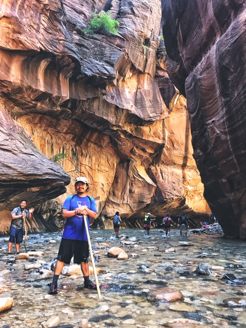

About Me
Fake text. Will fill in later...
She woke with a gasp, not knowing who she was, or where.
The smell of blood was heavy in her nostrils… or was that her nightmare, lingering? She had dreamed of wolves again, of running through some dark pine forest with a great pack at her hells, hard on the scent of prey.
Half-light filled the room, grey and gloomy. Shivering, she sat up in bed and ran a hand across her scalp. Stubble bristled against her palm. I need to shave before Izembaro sees. Mercy, I’m Mercy, and tonight I’ll be raped and murdered. Her true name was Mercedene, but Mercy was all anyone ever called her…
Except in dreams. She took a breath to quiet the howling in her heart, trying to remember more of what she’d dreamt, but most of it had gone already. There had been blood in it, though, and a full moon overhead, and a tree that watched her as she ran.
She had fastened the shutters back so the morning sun might wake her. But there was no sun outside the window of Mercy’s little room, only a wall of shifting grey fog. The air had grown chilly… and a good thing, else she might have slept all day. It would be just like Mercy to sleep through her own rape.
Gooseprickles covered her legs. Her coverlet had twisted around her like a snake. She unwound it, threw the blanket to the bare plank floor and padded naked to the window. Braavos was lost in fog. She could see the green water of the little canal below, the cobbled stone street that ran beneath her building, two arches of the mossy bridge… but the far end of the bridge vanished in greyness, and of the buildings across the canal only a few vague lights remained. She heard a soft splash as a serpent boat emerged beneath the bridge’s central arch. “What hour?” Mercy called down to the man who stood by the snake’s uplifted tail, pushing her onward with his pole.
The waterman gazed up, searching for the voice. “Four, by the Titan’s roar.” His words echoed hollowly off the swirling green waters and the walls of unseen buildings.
She was not late, not yet, but she should not dawdle. Mercy was a happy soul and a hard worker, but seldom timely. That would not serve tonight. The envoy from Westeros was expected at the Gate this evening, and Izembaro would be in no mood to hear excuses, even if she served them up with a sweet smile.